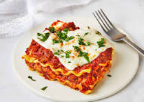

Lasagna recipe easy
HOME

Lasagna is a classic Italian dish made with layers of pasta, rich meat or vegetable sauce, creamy béchamel or ricotta cheese, and melted mozzarella, all baked to perfection. The combination of flavors and textures creates a hearty and comforting meal that is perfect for family dinners or special occasions. Traditionally, lasagna is prepared with a slow-cooked tomato-based sauce, often featuring ground beef or sausage, but variations with chicken, seafood, or even a vegetarian mix of spinach and mushrooms are also popular. Served hot with a side of garlic bread or a fresh salad, lasagna is a timeless favorite that brings warmth and satisfaction to every bite.
- 2 tablespoons olive oil
- 1 pound (450g) ground beef or Italian sausage
- 1 small onion, finely chopped
- 3 cloves garlic, minced
- 1 can (28 oz) crushed tomatoes
- 1 can (15 oz) tomato sauce
- 1 can (6 oz) tomato paste
- 1/2 cup water
- 1 teaspoon dried basil
- 1 teaspoon dried oregano
- 1/2 teaspoon salt
- 1/2 teaspoon black pepper
- 1 teaspoon sugar (optional)
- 2 cups ricotta cheese (or cottage cheese)
- 1 large egg
- 1/4 cup grated Parmesan cheese
- 1 teaspoon dried parsley
- 12 lasagna noodles
- 2 cups shredded mozzarella cheese
Now for the steps:
- Preheat the oven to 375°F (190°C).
- Cook the lasagna noodles according to the package instructions, then drain and set aside.
- Heat olive oil in a large pan over medium heat, then add the ground beef or sausage and cook until browned.
- Add chopped onion and minced garlic to the pan, cooking until softened.
- Stir in crushed tomatoes, tomato sauce, tomato paste, and water.
- Season with basil, oregano, salt, pepper, and sugar (if using).
- Simmer the sauce for 20-30 minutes, stirring occasionally.
- In a bowl, mix ricotta cheese, egg, Parmesan cheese, and dried parsley until well combined.
- Spread a thin layer of meat sauce on the bottom of a baking dish.
- Place a layer of cooked lasagna noodles over the sauce.
- Spread a portion of the ricotta mixture over the noodles.
- Sprinkle some shredded mozzarella cheese over the ricotta layer.
- Repeat the layers (sauce, noodles, ricotta, mozzarella) until all ingredients are used, ending with mozzarella on top.
- Sprinkle grated Parmesan cheese over the top layer.
- Cover with aluminum foil and bake for 25 minutes.
- Remove the foil and bake for another 20-25 minutes until the cheese is bubbly and golden.
- Let the lasagna rest for 10 minutes before slicing and serving.